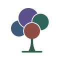

Семейное древо
Насколько надёжна связь
Карта мест
Документы
Книжка историй
В этот день
Находки
Время
Веер предков
Нажмите на человека — откроется его история, двойной клик — только его предки. Нажмите на линию — документы, на которых держится связь.

Семейное древоВидео на три минуты. Потом его всегда можно найти под «?» вверху справа.
Нажмите на человека — откроется его история, двойной клик — только его предки. Нажмите на линию — документы, на которых держится связь.
Не удалось загрузить данные сайта. Проверьте связь и обновите страницу.